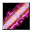

肉塊の矢 Bolt of Flesh
英語版 CrawlWiki の記事「Bolt of Flesh」(0.34 向け、2026-05-24 版)の翻訳です。原文の著者は編集履歴をご覧ください。
|  肉塊の矢 | |
|---|---|
| 詠唱の騒音 | 6 |
| 呪文の騒音 | 0 |
| 射程 | 5 |
| フラグ | 混沌(Chaotic)、方向・対象指定(Dir or target)、モンスター専用(Monster)、射線の確認が必要(Needs tracer) |

| 魔法で生み出した肉塊を雨あられと浴びせる。肉塊は軌道の終点の地面に、しばらくの間山となって残る。 |
肉塊の矢はモンスター専用の呪文だ。対象を貫通するボルトを放ち、最後に止まった場所に肉の山を残す。
肉塊の矢を唱える敵は次のとおり。